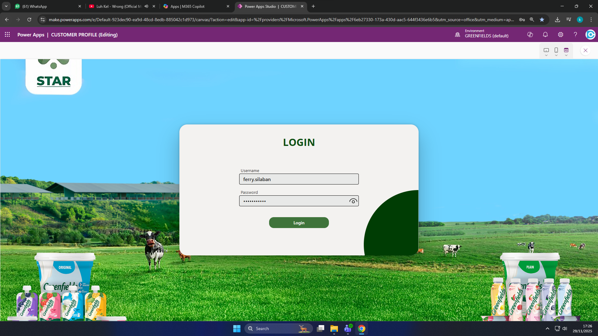
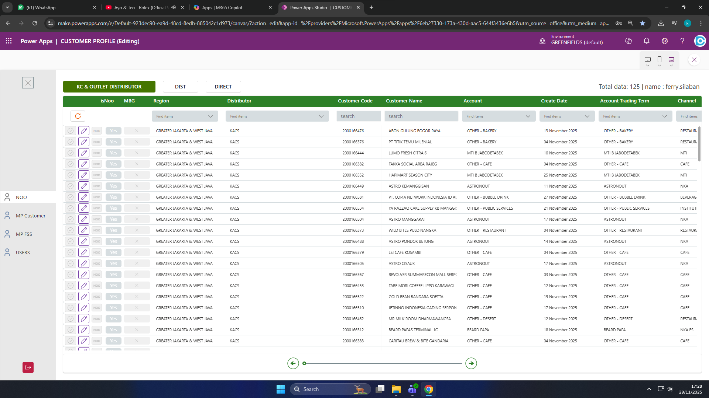
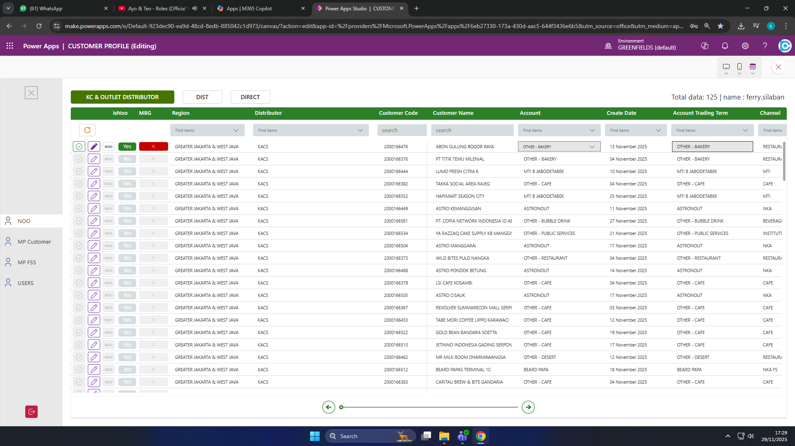
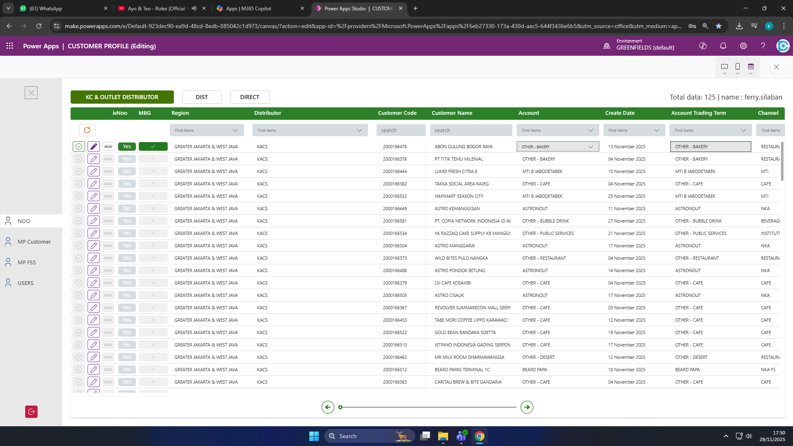

Masuk ke Power Apps
Buka aplikasi Power Apps dan lakukan login menggunakan akun perusahaan Anda. Masukkan Username dan Password pada form login yang muncul.
- Username: Masukkan username Anda (contoh: ferry.silaban)
- Password: Masukkan password Anda
- Klik tombol Login untuk masuk ke aplikasi

Akses Halaman NOO
Setelah login berhasil, Anda akan melihat halaman utama Customer Profile. Di sidebar kiri, klik menu NOO untuk membuka halaman New Outlet Opening.
Halaman NOO menampilkan tabel data customer dengan informasi berikut:
- isNoo: Status NOO (New Outlet Opening) dengan tombol "Yes" (hijau) untuk aktif dan "No" (merah) untuk tidak aktif
- MBG: Status MBG (Makan Bergizi Gratis) dengan tombol "Check" (hijau) untuk aktif dan "X" (merah) untuk tidak aktif
- Region: Wilayah customer (contoh: GREATER JAKARTA & WEST JAVA)
- Distributor: Nama distributor (contoh: KACS)
- Customer Code: Kode unik customer
- Customer Name: Nama customer
- Account: Tipe akun customer
- Create Date: Tanggal pembuatan data
- Account Trading Term: Term trading akun
- Channel: Saluran bisnis customer

Filter dan Edit Data Customer
Pada halaman NOO, Anda dapat melakukan berbagai operasi untuk mengelola data customer:
Filter Berdasarkan Tipe:
Di bagian atas tabel, terdapat tiga tombol filter:
- KC & OUTLET DISTRIBUTOR - Menampilkan data KC dan Outlet Distributor (tombol aktif berwarna hijau lebih gelap)
- DIST - Menampilkan data Distributor
- DIRECT - Menampilkan data Direct
Filter Berdasarkan Kolom:
Setiap kolom memiliki field filter di bawah header:
- Kolom dengan dropdown: Klik field "Find items" untuk memilih nilai filter
- Kolom Customer Code & Customer Name: Gunakan field "search" untuk mencari dengan kata kunci
Edit Data Customer:
Untuk mengedit data customer tertentu, ada dua cara:
- Ikon Pencil (Warna Ungu): Klik ikon pencil warna ungu di baris data customer yang ingin diedit. Ini akan mengaktifkan mode edit untuk customer tersebut.
- Checklist (Checkbox): Centang checklist (checkbox) di baris customer yang ingin diproses untuk approve NOO. Setelah di-approve, customer tersebut akan otomatis dimasukkan ke dalam mapping customer.
Kolom yang Dapat Diedit:
Setelah mengaktifkan mode edit dengan ikon pencil, Anda hanya dapat mengubah kolom-kolom berikut:
- MBG: Status Makan Bergizi Gratis (Check hijau / X merah)
- isNoo: Status NOO (Yes hijau / No merah)
- Account: Tipe akun customer
- Account Trading Term: Term trading akun
- Region, Distributor, Customer Code, Customer Name, Create Date, dan Channel adalah kolom yang tidak dapat diubah karena merupakan data master yang sudah terintegrasi dengan sistem.
- Ikon Pencil (Ungu): Mengaktifkan mode edit untuk mengubah kolom MBG, isNoo, Account, dan Account Trading Term.
- Checklist (Checkbox): Memilih customer untuk approve status NOO. Setelah approve, customer akan otomatis masuk ke mapping customer dan status NOO berubah menjadi approved.
Refresh Data:
Klik ikon refresh (panah melingkar) di atas kolom "isNoo" untuk memuat ulang data terbaru.

Mengatur Status MBG
Kolom MBG memungkinkan Anda untuk mengatur status MBG (Makan Bergizi Gratis) untuk setiap customer.
Cara Menggunakan Tombol MBG:
- Tombol "Check" (Hijau): Klik untuk mengaktifkan status MBG untuk customer tersebut
- Tombol "X" (Merah): Klik untuk menonaktifkan status MBG
Indikator Status:
- Jika tombol "Check" berwarna hijau lebih gelap, berarti status MBG aktif
- Jika tombol "X" berwarna merah lebih gelap, berarti status MBG tidak aktif
- isNoo: Menggunakan tombol "Yes" (hijau) dan "No" (merah)
- MBG: Menggunakan tombol "Check" (hijau) dan "X" (merah)
Langkah-langkah:
- Gunakan filter atau search untuk menemukan customer yang ingin diubah status MBG-nya
- Scroll ke kolom "MBG" pada baris customer tersebut
- Klik tombol "Check" (hijau) untuk mengaktifkan, atau tombol "X" (merah) untuk menonaktifkan
- Status akan langsung tersimpan dan terlihat di tabel
Tips Penggunaan
- Navigasi Sidebar: Gunakan menu di sidebar kiri untuk beralih antara NOO, MP Customer, MP FSS, dan USERS
- Kombinasi Filter: Anda dapat menggunakan beberapa filter sekaligus untuk mendapatkan hasil yang lebih spesifik
- Search Customer: Gunakan field search di kolom Customer Code atau Customer Name untuk mencari customer dengan cepat
- Pagination: Gunakan tombol panah kiri/kanan di bagian bawah tabel untuk navigasi antar halaman
- Refresh Data: Selalu refresh data sebelum melakukan perubahan penting untuk memastikan data yang ditampilkan adalah data terbaru